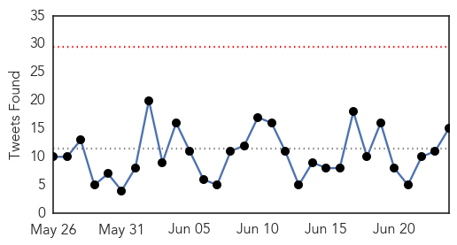
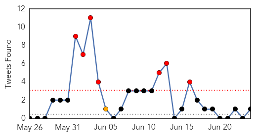
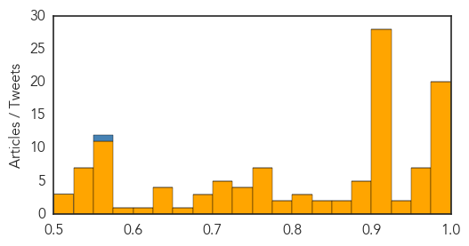

Ebola
30-Day Web Trend
0 alerts, 0 warnings

30-Day Twitter Trend
0 alerts, 0 warnings

Article Locations

Article Confidences

Top Articles:
- 1.000
- Ebola epidemic was disaster for malaria control: study
- 1.000
- Ebola to blame for more malaria deaths in west Africa
- 1.000
- Ebola outbreaks in Senegal and Nigeria now under control, CDC says
- 1.000
- Some Ebola experts worry virus may spread more easily than assumed
- 1.000
- 8th person tested for Ebola in L.A. County is quarantined
- 1.000
- Ebola setback for Sierra Leone as capital records new cases
- 1.000
- Ebola scare ‘hampers malaria fight’ - Africa
- 1.000
- Ebola cases not slowing in Guinea, Sierra Leone
- 1.000
- Ebola cases not slowing in Guinea, Sierra Leone
- 1.000
- News Scan for Jun 24, 2015
- 1.000
- Ebola returns to Sierra Leone's capital: government
- 1.000
- Ebola setback for Sierra Leone as capital records new cases (Update)
- 1.000
- New Ebola cases in Sierra Leone
- 0.999
- Ebola setback for Sierra Leone as capital records new cases
- 0.999
- No plan to close borders
- 0.999
- Ebola Surfaces Again
- 0.999
- Ebola returns to Sierra Leone’s capital: government
- 0.999
- Thousands Of Guinea Malaria Cases Go Untreated Amid Ebola Fears
- 0.999
- Ebola-exposed patient arrives at Maryland clinic
- 0.999
- Ebola: Just When We Thought It Was Over, Another African Country Records 2 Fresh Cases
- 0.999
- ‘No Need to Close Border’: Liberia's Deputy Health Minister
- 0.999
- Malaria killed more people than usual in Ebola outbreak
- 0.999
- CDC: Ready for MERS Outbreak at Home
- 0.999
- Two new cases of Ebola in Sierra Leone crush hopes of virus' defeat
- 0.999
- Malaria killed more people than usual in Ebola outbreak
- 0.998
- Ebola reappears in Sierra Leone's capital after several weeks without new cases
- 0.998
- Fears that Ebola crisis will set back malaria fight
- 0.998
- Three Ebola virus variants identified in Guinea
- 0.998
- Ebola outbreak: New cases in Freetown, Sierra Leone
- 0.996
- Q/A: The search for Ebola vaccine in Uganda
- 0.996
- Dallas-area Africans confront Ebola fears
- 0.996
- Ebola cases not slowing in Guinea, Sierra Leone
- 0.995
- Flight attendants call for tougher Ebola screening
- 0.994
- Three Ebola virus variants identified in Guinea
- 0.993
- Liberia Watches Nervously as Ebola Spreads Near Border
- 0.993
- Sierra Leone Records New Cases Ebola
- 0.991
- Sierra Leone enforces curfew as Ebola virus resurfaces in north west
- 0.989
- Three new Ebola cases reported in Sierra Leone's capital
- 0.988
- Thomas Eric Duncan of Liberia dies of Ebola in Dallas
- 0.988
- Two Doctors in Ebola Fight Named Civil Servants of the Year
- 0.985
- New Ebola cases frustrate hopes of defeating the virus in Sierra Leone (w/video)
- 0.984
- Dallas hospital says Ebola patient denied being around sick people
- 0.977
- Sierra Leone reports 3 new cases of Ebola -
- 0.976
- Three new Ebola cases reported in Sierra Leone's capital - Xinhua
- 0.975
- June 24 news: ACA, malaria, MERS
- 0.973
- Effort to prevent panic over Ebola went too far
- 0.966
- MERS 'suspects' face fines if they don't cooperate
- 0.965
- Ebola epidemic in Guinea may be hurting malaria treatment
- 0.963
- A whisper of hope in Liberia's fight against Ebola deaths
- 0.955
- Sierra Leone Reports 3 Fresh Cases Of Ebola
Showing top 50 articles...
Top Tweets:
- 0.870
- Sad Ebola news: Guinea & Sierra Leone had gone 2 months & 6 wks respectively without healthcare worker infections. Last week there were 3.
- 0.834
- Ebola cases reported in Guinea as people travel worries increase with ... - U.S. News & World Report http://t.co/gTkdbrJaxA ebola EVD
- 0.834
- Ebola cases reported in Guinea as people travel worries increase with ... - U.S. News & World Report http://t.co/LDpfVcKKEV ebola EVD
- 0.813
- UN envoy on Ebola travels to Guinea Bissau after new cases reported in ... - UN News Centre http://t.co/q9H7zfG6DL ebola EVD
- 0.792
- Ebola may have caused spike in Guinea's malaria deaths - Al Jazeera America http://t.co/tx7tn7QR0R ebola EVD
- 0.758
- Effect of the Ebola-virus-disease epidemic on malaria case management in Guinea 2014: http://t.co/EcNG7VaVsn (via)
- 0.738
- Thousands of Guinea malaria cases go untreated amid Ebola fears - The Guardian http://t.co/Ke6IdGnZ9E ebola EVD
- 0.705
- Worrying Ebola news: 50% of the 20 cases reported in the wk to June 21 weren't contacts of known cases. Translation: cases being missed 1/2
- 0.652
- 'It's penis Ebola' - anaesthetist caught verbally abusing sedated patient - TVNZ http://t.co/Sq2aqXTlN0 ebola EVD
- 0.627
- We have lost about 6 out of every 10 of the 807 health workers that caught Ebola in Guinea Liberia and Sierra Leone. http://t.co/D6MFAiIvGU
- 0.613
- RT: .@UNFPA & @WHO co-lead the response for non-Ebola health services in quarantined households. EbolaRespo…
- 0.597
- Ebola undermines health care. Stopping Ebola is key. Malaria services need to resume and expand. http://t.co/cWja8SCSNn
- 0.569
- If Ebola Returns Is Washington Or WHO Any Better Prepared? - Forbes http://t.co/x98KltlQL7 ebola EVD
- 0.549
- Olivia Wilde Spotlights Ripple Effects of Ebola Crisis - ABC News http://t.co/K1HPDb62sI ebola EVD
- 0.525
- Olivia Wilde spotlights ripple effects of Ebola crisis - U-T San Diego http://t.co/9X1HIFvThk ebola EVD
Unknown
30-Day Web Trend
15 alerts, 4 warnings

30-Day Twitter Trend
7 alerts, 1 warnings

Article Locations

Article Confidences
Top Articles:
- 0.999
- MERS outbreak at a crossroads, says Seoul health official
- 0.999
- South Korean hospitals suspend services as MERS outbreak spreads
- 0.999
- (LEAD) S. Korea reports 4 new MERS cases with no additional deaths
- 0.998
- With more MERS cases, South Korea says outbreak at crossroads
- 0.998
- With more MERS cases, S.Korea says outbreak at crossroads
- 0.998
- With more MERS cases, South Korea says outbreak at a crossroads
- 0.996
- Two more MER deaths reported in South Korea
- 0.994
- MERS virus death toll rises to '471 since 2012': WHO
- 0.994
- The World On Arirang
- 0.992
- South Korea reported 4 more new MERS cases
- 0.992
- No new probable MERS cases found in Thailand
- 0.991
- 2 USFK families released from MERS quarantine
- 0.991
- MERS cases increase again; infection outside of hospitals reported
- 0.988
- S Korea reports 4 new Mers cases, bringing total to 179, Others news, Health News, AsiaOne YourHealth
- 0.988
- MERS update: Korea, Saudi Arabia
- 0.985
- South Korea reports four new cases of Mers virus
- 0.985
- Health authorities says disease outbreak is at crossroads
- 0.985
- Four new MERS cases reported, 179 in total in S. Korea
- 0.981
- Gov’t Relies on Thermal Scans to Prevent Spread of MERS
- 0.975
- What to Know About the Cyclospora Parasite Outbreak
- 0.974
- Park vows to improve disease countermeasures
- 0.974
- Omani businessman only 'mildly affected' by MERS
- 0.969
- With more MERS cases, South Korea says outbreak at crossroads
- 0.968
- Pregnant MERS patient recovers, safely gives birth, Others news, Health News, AsiaOne YourHealth
- 0.964
- FPO says Mers situation in Thailand is under control
- 0.959
- Thailand still faces risk of MERS
- 0.953
- South Korea Reports Four New MERS Cases, Total Rises to 179
- 0.946
- Test declares child in Jakarta not infected by MERS
- 0.941
- Extremely Deadly Virus Has Come From The Muslim World Unleashing A Biblical Plague
- 0.925
- Simple steps could have prevented heatwave deaths: doctors
- 0.917
- Chicago Tribune
- 0.917
- Chicago Tribune
- 0.917
- Chicago Tribune
- 0.917
- Chicago Tribune
- 0.917
- Chicago Tribune
- 0.917
- Chicago Tribune
- 0.917
- Chicago Tribune
- 0.917
- Chicago Tribune
- 0.917
- Chicago Tribune
- 0.917
- Chicago Tribune
- 0.917
- Chicago Tribune
- 0.917
- Chicago Tribune
- 0.917
- Chicago Tribune
- 0.917
- Chicago Tribune
- 0.917
- Chicago Tribune
- 0.917
- Chicago Tribune
- 0.917
- Chicago Tribune
- 0.917
- Chicago Tribune
- 0.917
- Chicago Tribune
- 0.917
- Chicago Tribune
Showing top 50 articles...
Top Tweets:
- 0.553
- RT: .@WHO reports on 4 cases in the MERS outbreak at Hufof KSA. Still no clear public description of that event. http://…